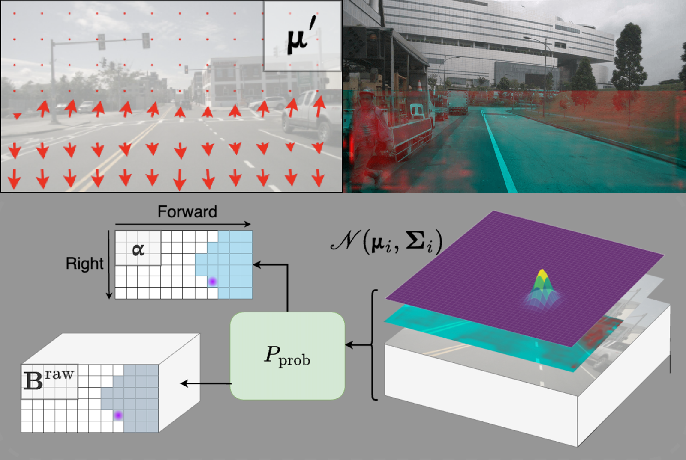

About
I’m currently pursuing my Master’s degree at the University of Oxford, after completing my Bachelor’s in Computer Engineering at Koç University. Along the way, I’ve enjoyed working on exciting projects in areas like language, vision, and finance, as well as building tools for real-time data.
Publications

Mapping like a Skeptic: Probabilistic BEV Projection for Online HD Mapping
Fatih Erdoğan, Merve Rabia Barın, Fatma Güney
British Machine Vision Conference (BMVC), 2025
Fatih Erdoğan, Merve Rabia Barın, Fatma Güney
British Machine Vision Conference (BMVC), 2025
Constructing high-definition (HD) maps from sensory input requires accurately mapping the road elements in image space to the Bird's Eye View (BEV) space. The precision of this mapping directly impacts the quality of the final vectorized HD map. Existing HD mapping approaches outsource the projection to standard mapping techniques, such as attention-based ones. However, these methods struggle with accuracy due to generalization problems, often hallucinating non-existent road elements. Our key idea is to start with a geometric mapping based on camera parameters and adapt it to the scene to extract relevant map information from camera images. To implement this, we propose a novel probabilistic projection mechanism with confidence scores to (i) refine the mapping to better align with the scene and (ii) filter out irrelevant elements that should not influence HD map generation. In addition, we improve temporal processing by using confidence scores to selectively accumulate reliable information over time. Experiments on new splits of the nuScenes and Argoverse2 datasets demonstrate improved performance over state-of-the-art approaches, indicating better generalization. The improvements are particularly pronounced on nuScenes and in the challenging long perception range.